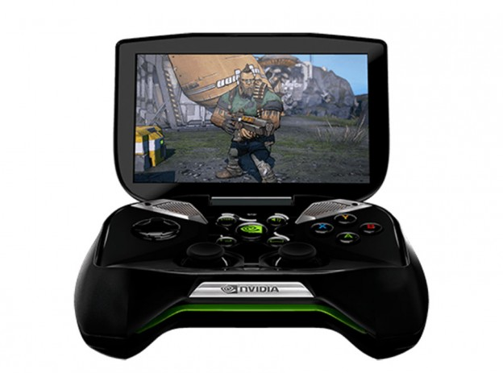

CES 2013: NVIDIA anuncia su nueva consola portátil Project SHIELD

NVIDIA ofreció una conferencia de prensa donde reveló varias sorpresas. La más importante es, sin duda, el anuncio de la nueva consola portátil Project SHIELD, un sistema potenciado por Tegra 4, el procesador más reciente de la familia Tegra que dice tener seis veces más poder de GPU que el Tegra 3. De acuerdo a NVIDIA, Project SHIELD ofrece juegos con calidad similar a la de consolas e incluso se puede conectar un control similar al de Xbox 360 para emular esas sesiones de juego. En términos de especificaciones Project SHIELD luce bastante bien, acompañando al Tegra 4 se incluye una pantalla multitáctil de 5 pulgadas (294ppi) con resolución 720p. La consola corre bajo una versión “limpia” de Android y ofrece la posibilidad de jugar por stream títulos de una PC casera y cuenta con integración de Steam. La gracia de esto es que si tienes una tarjeta de video GeForce GTX 650 (o de mayor gama) podrás transmitir por Wi- Fi tu biblioteca de títulos de PC para jugarlos en la SHIELD.